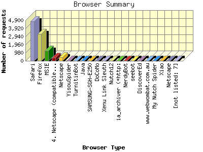

The Browser Summary identifies the most popular web browsers used to visit
this site.
Browsers are broken down by recognized categories such as
Netscape Navigator/Communicator, Microsoft Internet Explorer, WebTV, Opera
and the like. Within each category is also a subgroup by version number
such as 'MSIE 5.0' or 'Netscape 4.5'.
This report shows the first 20 results by requests for pages. This report is sorted by number of requests for pages.

| Browser Type | Number of requests | Number of page requests | |
|---|---|---|---|
| 1. | Safari | 4,806 | 3,626 |
| Safari/537 | 4,208 | 3,495 | |
| Safari/9537 | 427 | 55 | |
| Safari/8536 | 53 | 40 | |
| Safari/534 | 72 | 15 | |
| Safari/533 | 34 | 9 | |
| Safari/7534 | 6 | 6 | |
| Safari/532 | 5 | 5 | |
| Safari/536 | 1 | 1 | |
| 2. | Firefox | 3,217 | 2,909 |
| Firefox/3 | 2,731 | 2,721 | |
| Firefox/21 | 87 | 87 | |
| Firefox/22 | 38 | 38 | |
| Firefox/28 | 161 | 21 | |
| Firefox/29 | 125 | 15 | |
| Firefox/15 | 8 | 8 | |
| Firefox/14 | 5 | 5 | |
| Firefox/26 | 31 | 5 | |
| Firefox/2 | 4 | 2 | |
| Firefox/30 | 15 | 2 | |
| 3. | MSIE | 1,241 | 347 |
| MSIE/9 | 526 | 105 | |
| MSIE/8 | 347 | 75 | |
| MSIE/10 | 242 | 58 | |
| MSIE/6 | 46 | 45 | |
| MSIE/7 | 54 | 38 | |
| MSIE/5 | 3 | 3 | |
| 4. | Netscape (compatible) | 381 | 321 |
| 5. | Netscape | 449 | 59 |
| 6. | YisouSpider | 14 | 14 |
| 7. | TurnitinBot | 14 | 14 |
| TurnitinBot/3 | 14 | 14 | |
| 8. | Java | 19 | 11 |
| Java/1 | 19 | 11 | |
| 9. | SAMSUNG-SGH-E250 | 11 | 11 |
| SAMSUNG-SGH-E250/1 | 11 | 11 | |
| 10. | DoCoMo | 9 | 9 |
| DoCoMo/2 | 9 | 9 | |
| 11. | Xenu Link Sleuth | 5 | 5 |
| Xenu Link Sleuth/1 | 5 | 5 | |
| 12. | Nutch12 | 5 | 5 |
| Nutch12/Nutch-1 | 5 | 5 | |
| 13. | ia_archiver (+http: | 3 | 3 |
| ia_archiver (+http://www | 3 | 3 | |
| 14. | NerdyBot | 2 | 2 |
| 15. | seebot | 1 | 1 |
| seebot/1 | 1 | 1 | |
| 16. | DiscoverEd | 1 | 1 |
| DiscoverEd/Nutch-1 | 1 | 1 | |
| 17. | www.webwombat.com.au | 1 | 1 |
| 18. | My Nutch Spider | 1 | 1 |
| My Nutch Spider/Nutch-1 | 1 | 1 | |
| 19. | Xiao | 1 | 1 |
| Xiao/Nutch-1 | 1 | 1 | |
| 20. | Netscape | 6 | 1 |
| [not listed: 7] | 20 | 5 | |
This report was generated on May 31, 2014 07:16.
Report time frame May 1, 2014 01:09 to May 30, 2014 23:59.
| Web statistics report produced by: analog 6.0 / Report Magic 2.21 |